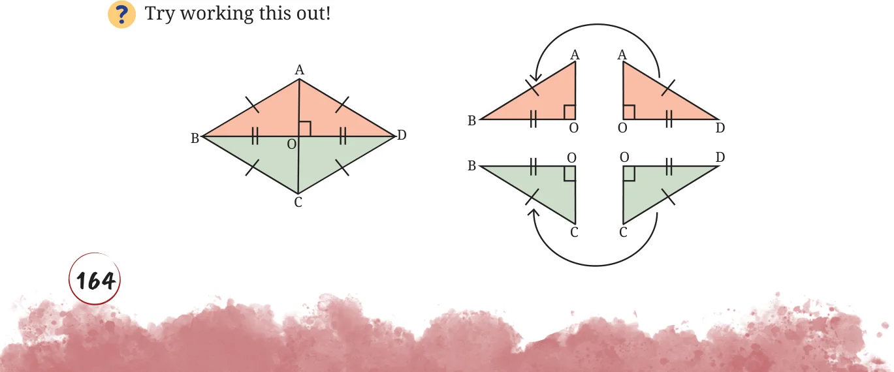
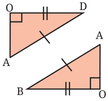
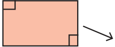
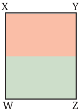
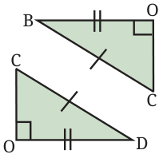
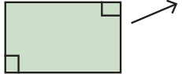
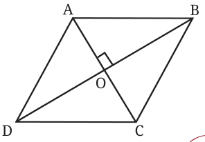

Since a rhombus is a parallelogram, the area formula for a parallelogram holds for a rhombus as well. However, the additional properties of a rhombus give us another method to transform a rhombus into a rectangle of the same area by dissection. This method occurs in one of the Śulba-Sūtras.







Since ABCD is a rhombus, all its sides have equal length, and the diagonals are perpendicular bisectors of each other. Therefore, \(\triangle ABD\) and \(\triangle CBD\) are isosceles triangles. Each of them can be transformed into a rectangle of equal area, and the two rectangles can then be joined to form a single rectangle. This rectangle, say WXYZ, has the same area as the rhombus ABCD.
What are the sidelengths of the rectangle WXYZ?
From the dissection, we can see that
\(XW =\) length of the diagonal AC, and
\(WZ =\) half the length of the other diagonal BD.
Thus, we have
Area of rhombus \(ABCD =\) Area of rectangle \(WXYZ\)
\(= XW \times WZ\)
\(= AC \times \frac{BD}{2}\)
\(= \frac{1}{2} \times AC \times BD\)
Therefore,
Area of rhombus ABCD can also be determined by finding the areas of \(\triangle ADB\) and \(\triangle CDB\). What formula does this give us?
Since the diagonals are perpendicular to each other, we have
Area \((\triangle ADB) = \frac{1}{2} \times AO \times BD\), and
Area \((\triangle CDB) = \frac{1}{2} \times CO \times BD\), and

Area of rhombus \(ABCD =\) Area \((\triangle ADB) +\) Area \((\triangle CDB)\).
Simplify the expression to show that we get the same formula for the area of a rhombus in terms of its diagonals.